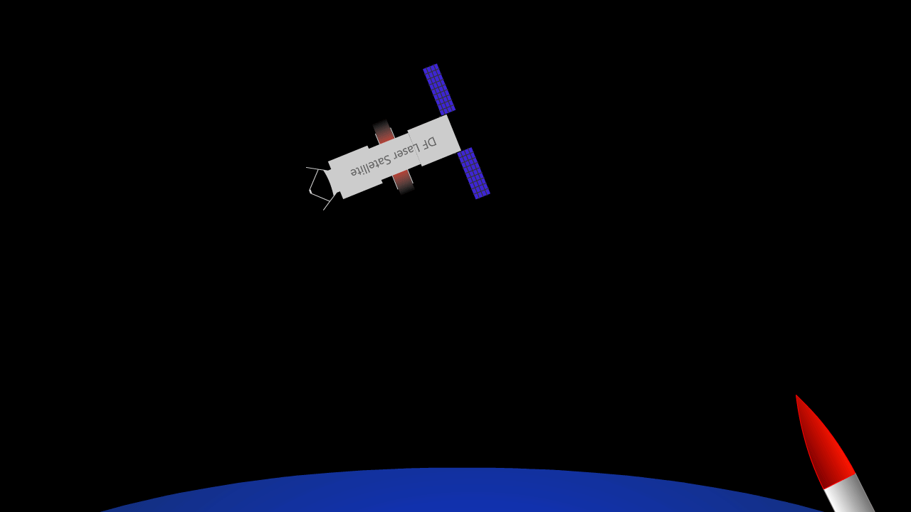
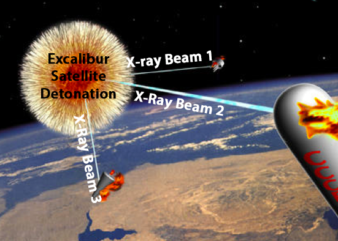
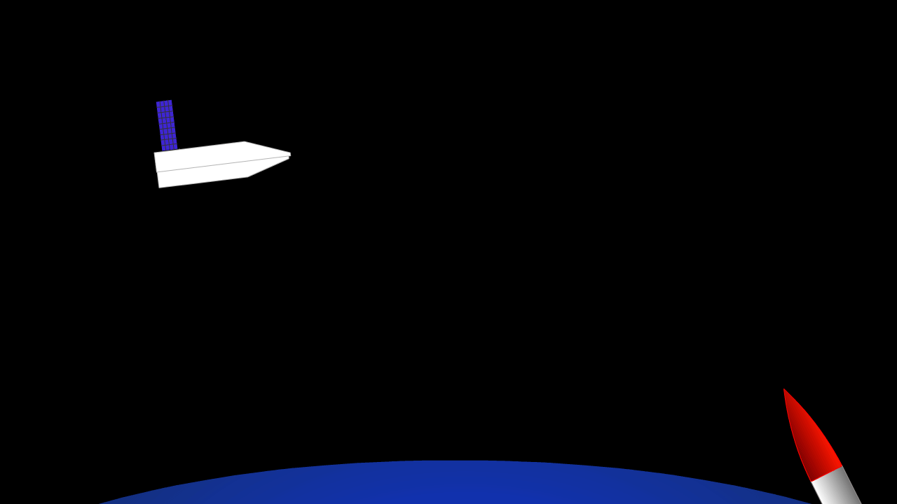

Laser Weapons
Most of the proposals for the SDI program involved lasers or concentrated beams of some sort, whether it be the laser deactivator satellites, or the wacky nuclear bomb powered Excalibur systems.
We will discuss the 2 main systems proposed for SDI that involved space lasers or concentrated beams of any sort.
Deuterium-Fluoride Lasers
This is the type of laser satellite many visualize in their head when they think about the SDI/Star Wars program. The procedure involved detection of the ICBM's position, aiming, and shooting. Pretty par for the course for a laser based weapon.
Enjoy this handy animation I made which demonstrates how it works.
Once shot, the ICBM will be destroyed in space, instead of on impact with American soil.
Excalibur (nuke based x-ray lasers)
This one is where things get much more wacky! The Excalibur system proposed detonating a nuke in space, and directing the X-Rays released upon detonation into concentrated particle beams. These would them be used to shoot down ICBMs. The advantage to this system is that it could shoot down many missiles at once, but it also had the problem of being a nuke in space, and as such it also went against the Outer Space Treaty.
Enjoy this graphic of what the Excalibur system might've looked like if it was launched.
(slightly edited to show the parts of the system)
Kinetic/collision weapons
After a report from the American Physical Society said that the laser weapons were infeasible and nowhere near completion for the timeframe needed, a different solution was employed for SDI. This system used space interceptors, which would destroy the ICBM by colliding with it.
Brilliant Pebbles
Brilliant Pebbles is technically comprised of 2 parts, Brilliant Eyes, and Brilliant Pebbles. The Eyes scope out the Missile by reading the IR signature of the rocket and calculates the position, time of flight, location of landing, and "decoyness" of the missile. This data is then sent onto the Brilliant Pebbles which get to work destroying the missiles by smashing straight into them.
This animation demonstrates how the Pebbles themselves function.
This system was infact launched, but it failed a few tests in 1990-1992. Due to this, and the end of the Cold War, the Brilliant Pebbles program was brought to an end.
Interceptors
This type of weapon would intercept a missile while in flight, and destroy it via collision, similar to the Brilliant Pebbles. These systems however would be launched from land, and not from space, unlike most of the SDI systems.
However, these also came out with mixed success.